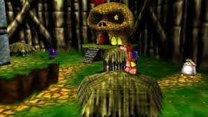

3D Game input
In 3D games, input refers to the player’s control signals from devices like keyboards, mice, or gamepads used to navigate and interact within a three-dimensional environment. These inputs manage character movements, camera angles, and game actions for an immersive experience.
Historical context
The historical context of input systems in 3D games begins with early arcade and home consoles, evolving from simple 2D control schemes to complex 3D interfaces. Significant milestones include the 1983 Nintendo Famicon introducing controls for both hands and directional buttons. The Nintendo 64 in 1994 was the first true 3D console, adding joysticks to controllers for navigating 3D spaces. By 1996, the Sony DualShock controller introduced dual joysticks and shoulder buttons, setting the standard for 3D game input complexity. Early 3D games faced challenges in rendering and input methods, progressing from wireframe simulations to fully textured 3D environments, with developers continually improving input devices to enhance player control and immersion in 3D worlds. This evolution reflects increasing complexity of game interfaces to allow richer player expression but also higher learning curves
Core techniques
Core techniques in 3D game input systems focus on capturing and interpreting player actions to control characters and camera movement in a 3D space. These include: Using raycasting to translate screen coordinates (like mouse clicks) into 3D world positions for interaction or navigation. Implementing analog input from joysticks or gamepads to allow smooth, variable-speed movement and camera rotation. Structuring input actions into configurable maps for different devices and gameplay contexts, allowing support for keyboard, gamepad, touch, and VR controllers. Handling input sensitivity, dead zones, and scaling to customize control responsiveness and prevent unintended inputs. Managing multiple players with separate input handlers and supporting runtime rebindings for customizable controls. Utilizing physics engines to apply forces and collisions correlated with player input for realistic movement.
Peripherals
Common peripherals used for 3D gaming include: Keyboards (most important keys WASD), game controllers (so you have more sensibility in race games for example), and now VR 